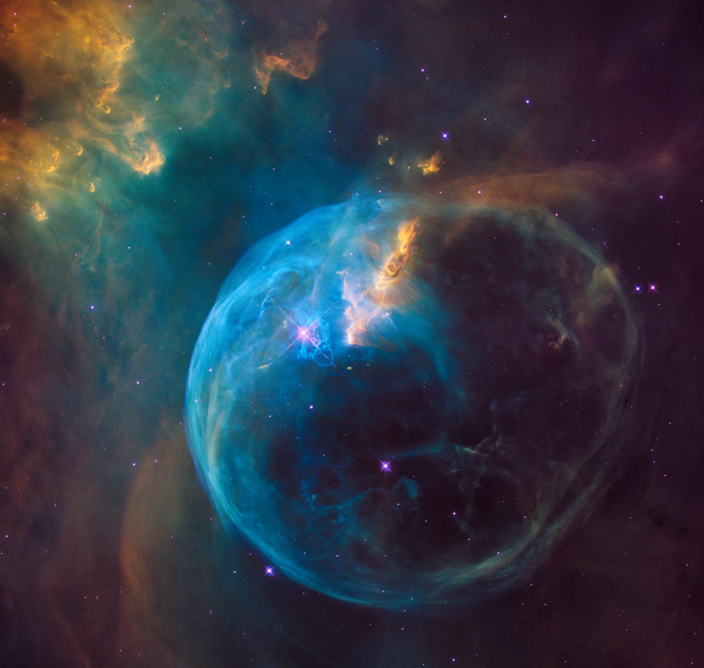

Scoperto un nuovo pianeta extrasolare sorprendente

Si chiama Ltt 9779b è un nuovo pianeta extrasolare scoperto di recente, che ha caratteristiche talmente inusuali da far pensare, all'inizio,
che si trattasse di un... errore. E invece ha pienamente titolo per entrare a far parte della grande famiglia dei pianeti al di fuori del Sistema solare che,
in qualche modo, sono "unici", per esempio per essere completamente ricoperti d'acqua o per far registrare temperature infernali,
oppure per il fatto di ruotare a una distanza piccolissima (o grandissima) dalla loro stella...
La scoperta è è descritta in un articolo appena pubblicato su Nature Astronomy ed è il frutto di una ricerca di un gruppo di "cercatori di pianeti" dell'Università del Cile.
CHE COPPIA! A individuare Ltt 9779b hanno contribuito sia telescopi sia terrestri sia spaziali. I primi segnali furono colti nel 2018 dal Transiting Exoplanet Survey Satellite (Tess), il telescopio spaziale della Nasa progettato per cercare nuovi pianeti, registrando una periodica diminuzione della luminosità i una stella, chiamata Ltt 9779, distante dalla Terra 260 anni luce.
A completare il lavoro fu, successivamente, il telescopio dell'Osservatorio Eso La Silla, che si trova nel nord del Cile, il quale confermò che i cali di luminosità della stella erano dovuti al passaggio di un pianeta, che si frapponeva tra la stella stessa e la Terra. Il pianeta fu classificato come "pianeta nettuniano", etichetta attribuita a quella categoria dei pianeti la cui massa è simile o maggiore a quella di Nettuno. Ltt 9779b infatti, ha una massa quasi doppia rispetto a quella di Nettuno, con un diametro (e dunque un volume) leggermente più grande e una densità quasi uguale a quella del pianeta del sistema solare.
ULTRA... CALDO! Inoltre, come ogni pianeta nettuniano che orbiti vicino alla sua stella ospite e presenti temperature elevate, Ltt 9779b fu definito "hot", bollente. Qualcuno, infine, fece notare che la sua temperatura (oltre 1.700 °C!) andava ben oltre i valori tipici dei pianeti "Hot Neptune" e così si decise di definirlo "Ultra Hot".
Ltt 9779b orbita attorno alla sua stella a una distanza molto minore rispetto a tutti i sistemi analoghi, ad appena 2 milioni e 400mila chilometri: per avere un termine di paragone, Mercurio si trova a circa 57 milioni di chilometri dal Sole. Questo fa sì che per compiere un giro completo, Ltt 9779b impieghi appena 19 ore terrestri. Come sottolinea James Jenkins, del Dipartimento di Astronomia dell'Università del Cile: «La scoperta di Ltt 9779b è stata una vera sorpresa, perché la maggior parte dei casi di esopianeti che transitano con periodi inferiori a un giorno, risultano poi essere errori. Questo invece si è confermato reale».